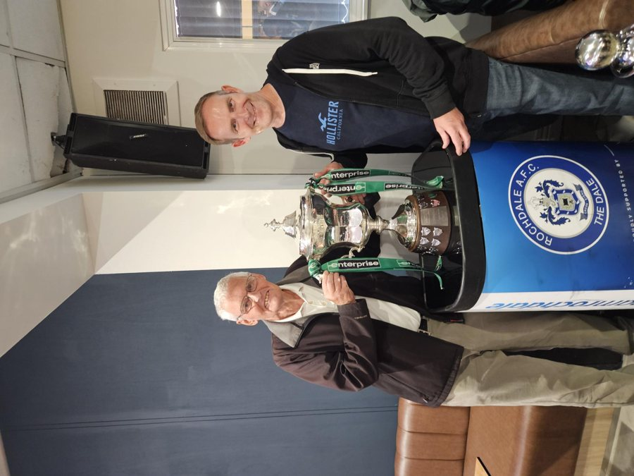
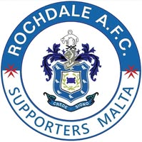
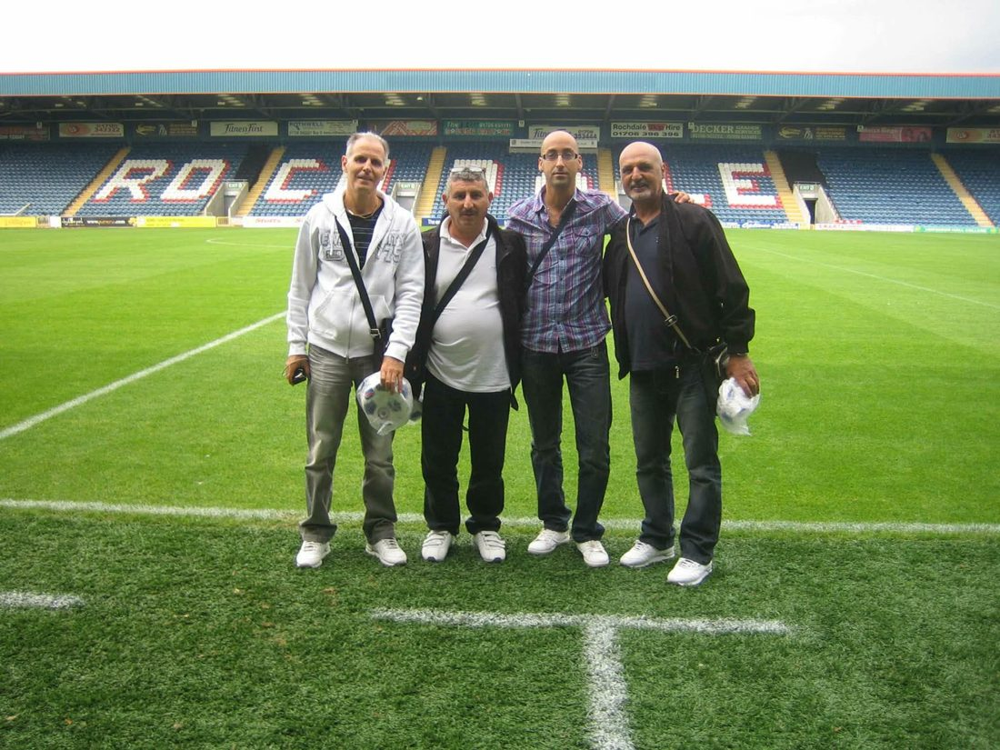
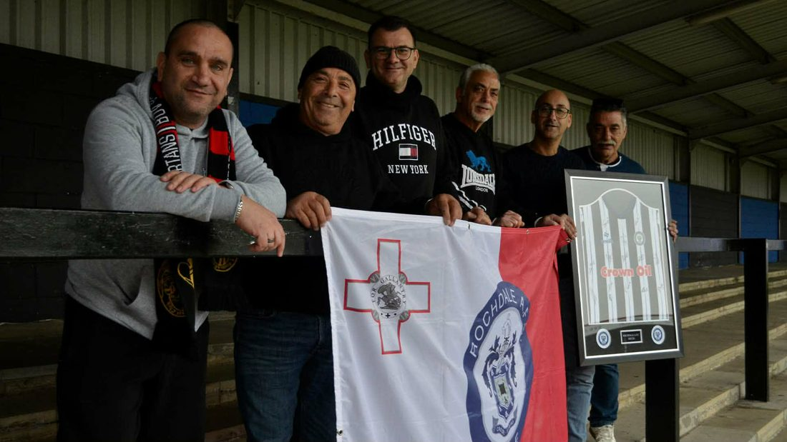
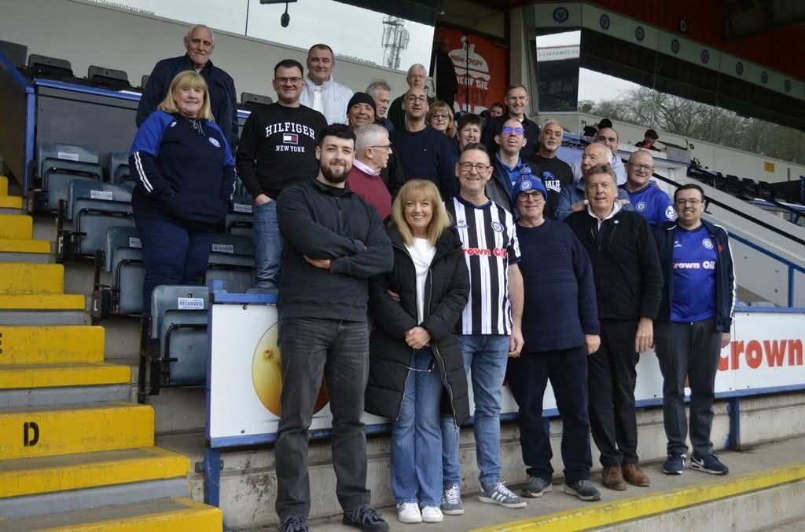
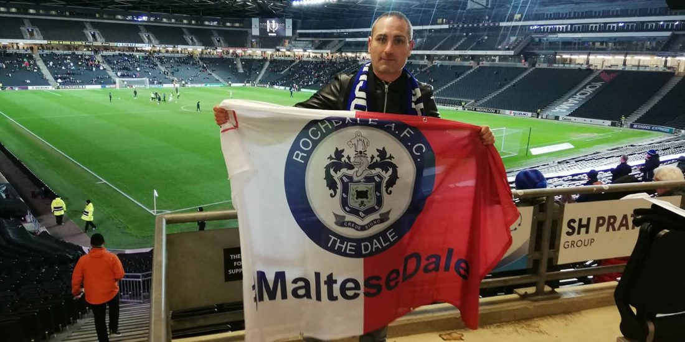
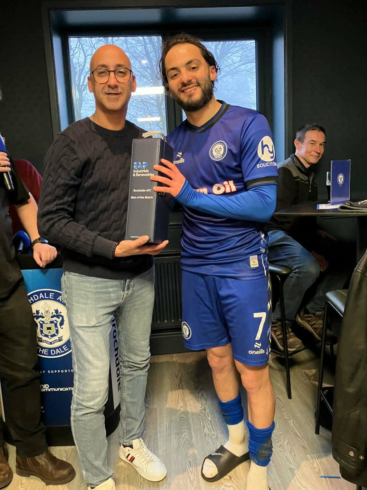
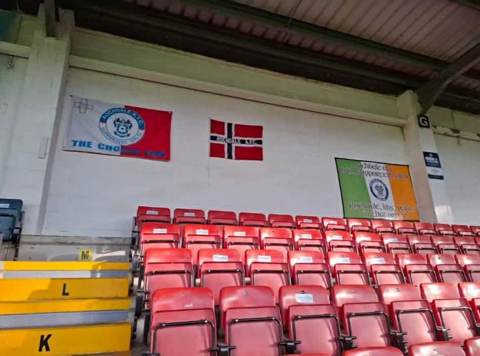

Exiles · Following the Dale from afar
Hundreds of Trust members follow the Dale from outside Rochdale — from Cheshire to Malta — across England and around the world. Exile groups keep them connected: lifts shared, away days organised, and the Dale followed together wherever you've landed.
The Trust’s own exile membership
Hundreds of Trust members follow the Dale from outside Rochdale — across the UK and around the world. Exile membership is for anyone who can’t get to the Crown Oil Arena as often as they’d like, and it keeps you connected: the newsletter, a vote on Trust matters, Player of the Month, and a direct line back to the club through your supporters’ trust.
Exiles are looked after by Ian Goodwin, the Trust’s Exiles Officer. Whether you’re in Cheshire or Christchurch, get in touch and we’ll make sure you’re on the list.
Exile membership is £7.50 for the season, the same as everyone else.
Two exile groups organise independently and welcome new members — SMAC in South Manchester and Cheshire, and Dale Exiles Malta.
South Manchester & Cheshire Rochdale Supporters
SMAC is now in its 25th season (going since 2002/03) and going strong, with members of all ages.
Support is given to the club each season home and away — plus our own Player of the Season award, won last season by Harvey Gilmour.
SMAC members share lifts to the Dale, enjoying home and away trips together and keeping each other updated via the group's WhatsApp. This season we're hoping to organise an away match overnighter and a match ball sponsor day.
New members are always welcome — give Andy a shout and come along to the next one.
Up the Dale and Down the Ale!


The biggest Dale supporters' group outside Rochdale
It started with one game. Four friends made their first visit to Spotland in 2011, for the home match against Charlton Athletic — and a year later, in 2012, Rochdale AFC Malta was born.
Since then the group has come back once or twice every season, and grown from those four into around 40 members. Their first away day was at Old Trafford in the Carabao Cup, followed by trips to MK Dons and Salford — and the Maltese flag with the Dale badge on it has now been unfurled everywhere from Stadium MK to the Wembley turf on promotion day.
The group's Facebook page, started just a year and a half ago, already has 2,900 followers — and last March they came over for the Trust's Exile Day, which they say they thoroughly enjoyed.
Dale Exiles Malta welcome new members. Find them on Facebook, or get in touch with the Trust and we'll put you in touch.
Viva d-Dale!






From overseas WhatsApp groups to county meet-ups, the Trust wants every pocket of Daleys connected. Get in touch with our Exile Officer, Ian Goodwin, and we'll help you get going — and give your group a home on this page.
Exiles are looked after by Ian Goodwin — exile@daletrust.co.uk